Снаряжение героев
Снаряжение героевСнаряжение: что надевать и зачем
Коротко: золотое снаряжение — основное, оно для боёв с людьми. Фиолетовое — против монстров и скверны, потому что у него есть особый бонус против монстров. Ниже — почему так, с цифрами, и как держать два комплекта.


4 вещи на героя
Меч, броня, наручи, сапоги. Каждая вещь — только в свой слот.
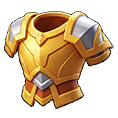
Золото — против людей
Чистые атака, защита, здоровье, крит и сопротивления. Работают везде.
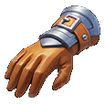
Фиолет — против монстров
На 10, 20 и 30 уровне получает по +2% против монстров. На 30 — до +6%.
Цель — 40 уровень
Дальше цена в травах вырастает в 17 раз. Сначала доведи основные вещи до 40.
Калькулятор снаряжения
Выбери вещь и уровни — калькулятор посчитает, сколько травы, камня снаряжения, стали и чертежей нужно, сколько прибавится мощи и характеристик. Цена одинаковая у всех вещей одной редкости.
Загружаю цифры…
Что даёт каждая вещь
Меч
Атака и шанс крита (сильного удара). Главное для героев урона.
Броня
Здоровье и защита от физического урона. Главное для танков.
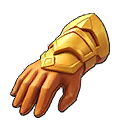
Наручи
Атака и защита от любого урона. Героям урона — вторыми после меча.

Сапоги
Защита и защита от энергетического урона. Танкам — вторыми после брони.
Цвета — от слабого к сильному
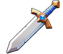

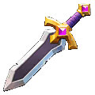
Мастерская снаряжения появляется на Святилище 4 и не может быть выше Святилища. Звёзды для золотых вещей открываются на Мастерской 20. Золотая вещь с 5 звёздами становится высшей редкостью (MR) и даёт +10% урона, когда твоя фракция сильнее вражеской.
Почему золотое снаряжение — против людей, а фиолетовое — против скверны
У каждой вещи есть «особые» уровни: 10, 20, 30 (у золотых ещё 40). На них вещь получает прибавку сверх обычной. У фиолетовых и золотых эти прибавки разные:
| Вещь | Фиолетовая — на 10, 20 и 30 уровне | Золотая — на 10, 20, 30 и 40 уровне |
|---|---|---|
| Меч | +2% урона по монстрам каждый раз | +250 атаки, +2,5% крита, +250 атаки, +2,5% крита |
| Наручи | +2% урона по монстрам каждый раз | +250 атаки, +2% защиты от урона, +250 атаки, +2% |
| Броня |  −2% урона от монстров каждый раз −2% урона от монстров каждый раз | +68 000 здоровья, +10% защиты от физического урона… |
| Сапоги | 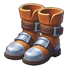 −2% урона от монстров каждый раз | +500 защиты, +10% защиты от энергетического урона… |
Что это значит на деле. Фиолетовая вещь 30 уровня = +6% против монстров. У золотой такого бонуса нет: её прибавки общие (атака, крит, защита), поэтому они работают и против людей.

Почему фиолетовые наручи сильнее золотых на боссе. У золотых наручей часть силы уходит в «защиту от урона», а Король демонов не бьёт в ответ — она бесполезна. Фиолетовые дают «урон по монстрам», и он добавляется в самом конце расчёта удара.
Правило: фиолетовую вещь надевай против монстров, если её уровень такой же или выше, чем у золотой. Если золотая намного выше — оставь золотую.
Что на ком — для каждого случая
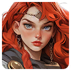


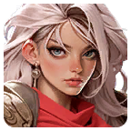

После удара верни вещи обратно — иначе на арену и в КвК пойдёшь в фиолетовом.
Как переодеть героя
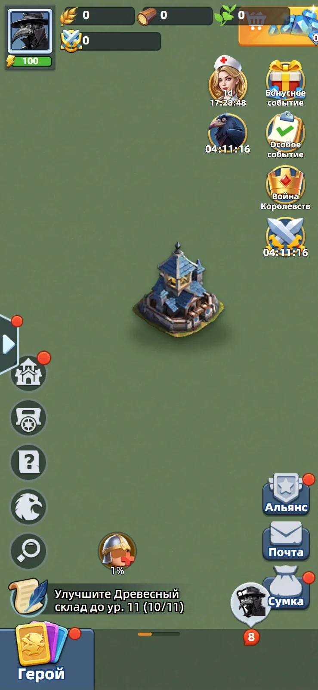
Открой «Герой»
Плитка «Герой» на главном экране внизу слева.
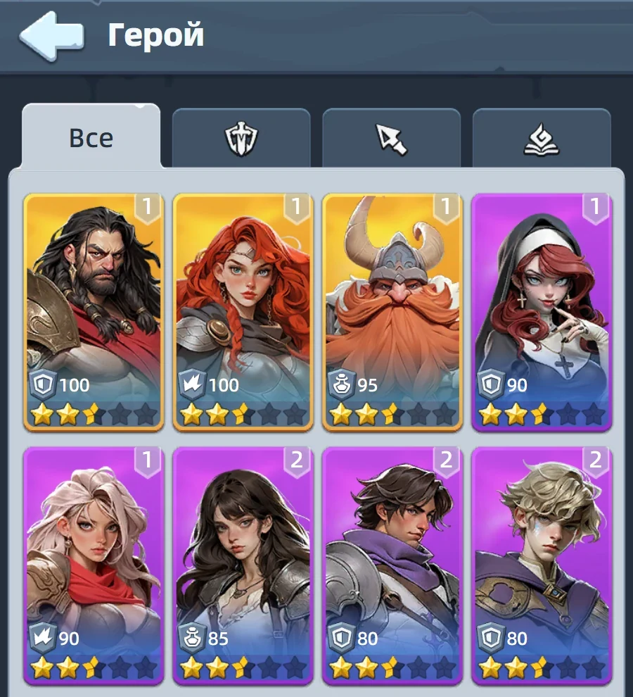
Выбери героя в списке
Откроется окно «Герой» со всеми героями. Сверху вкладки: «Все» и три фракции (значки Воинов, Рейнджеров, Колдунов). На карточке — цвет редкости, значок роли, уровень и звёзды; флажок с цифрой справа сверху — в каком отряде герой стоит. Нажми на нужного героя.
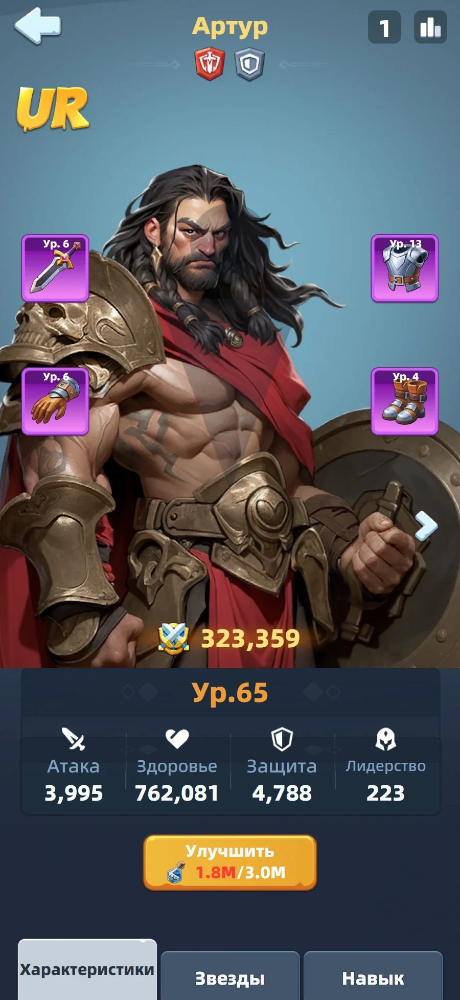
Нажми на клетку вещи
Четыре клетки по бокам героя: слева меч и наручи, справа броня и сапоги. На клетке — уровень вещи. Серая клетка с силуэтом — вещь не надета.
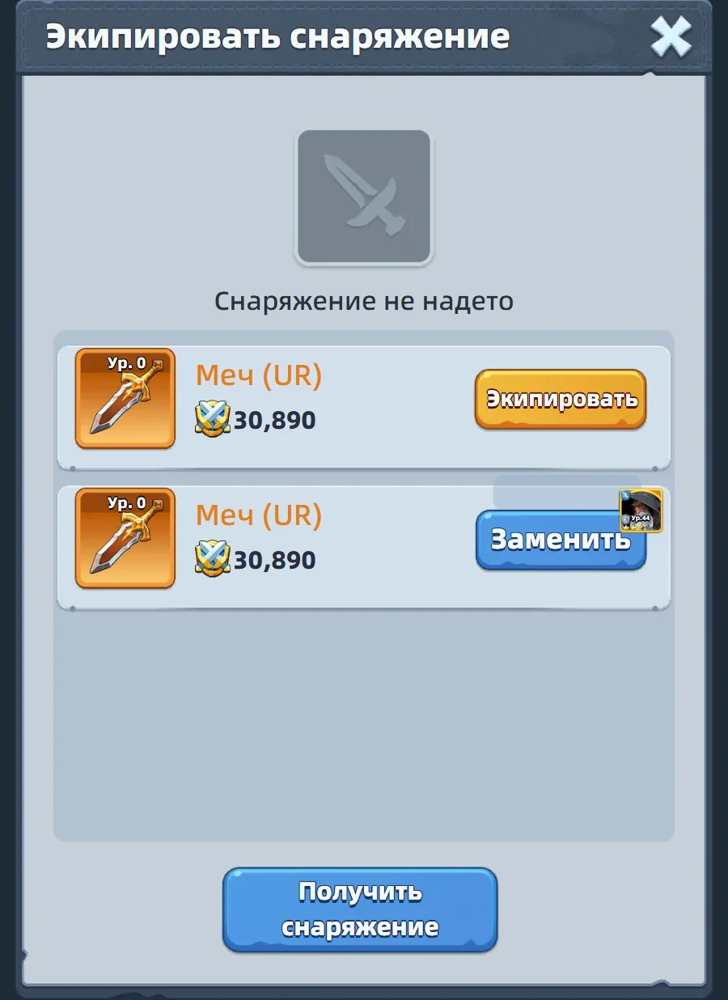
Выбери вещь
Откроется окно «Экипировать снаряжение»: сверху то, что надето сейчас, ниже — все подходящие вещи. «Экипировать» — вещь свободна. «Заменить» — она на другом герое (его портрет рядом): игра снимет её с него и наденет на этого.
После боя с боссом — верни как было. Те же шаги: открой героя, нажми на клетку и верни золотую вещь кнопкой «Заменить».
Что делать и качать первым
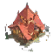
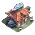
Святилище 10 → Мастерская снаряжения 10 → сразу золотоНе трать травы на синие и фиолетовые вещи, которые потом заменишь (кроме двух пар фиолетовых наручей для босса). Синие и фиолетовые выпадут сами из сундуков.
1) героям урона — полный комплект; 2) танкам — броня и сапоги; 3) поддержке — броня и сапоги; 4) поддержке — меч и наручи; 5) танкам — наручи. Танку меч не нужен совсем.
Сначала всё по этому порядку до 20 уровня. Потом меч героя урона — до 40 уровня и 1 звезды, потом его наручи — до 40.
Доводи одну вещь до следующей звезды, а не размазывай чертежи по всем. Каждая звезда поднимает потолок уровня на 4.
Разбор возвращает материалы, камни снаряжения и чертежи. Травы не возвращаются.

Ловушка 41-го уровня. До 40 уровня золотая вещь стоит около 1,4 млн трав за уровень. С 41-го — 23,4 млн трав и 150 закалённой стали за уровень. Посмотри запас трав, прежде чем лезть выше 40.
Снаряжение качай в субботу и воскресенье — в эти дни идёт событие «Улучшение снаряжения», за то же самое дают награду. Дуэль альянсов за снаряжение очков не даёт.
Из чего делают снаряжение и где это брать

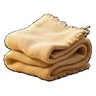


Магазин за медали славы: покупай только чертежи — 10 000 медалей за штуку, лимит 50. Не бери там сундуки реликвий и универсальные золотые фрагменты — это частая ошибка новичков.
Как не слить материалы
Потом нечего надеть на босса. Оставь 2 пары 30 уровня.
Один готовый комплект на главного героя урона сильнее пяти недоделанных.
Цифра мощи растёт, а в бою толку нет.
Фиолетовое — временное. Камни — в золотые вещи главных героев.
И пошёл в КвК в фиолетовом.
Встали и стройка, и исследования.